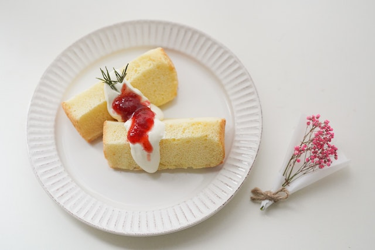

Cheese Cake

Description
This is a silky smooth cheesecake topped sky-high with gorgeous plump red
cherries. This ultimate cherry cheesecake is completely made from scratch
and is very easy to make.
Ingredients
- 1 (8 ounce) package cream cheese, softened
- 1 cup butter, softened
- 1 ½ cups white sugar
- 1 ½ teaspoons vanilla extract
- 4 eggs
- 2 ¼ cups all-purpose flour
- 1 ½ teaspoons baking powder
Directions
- Preheat oven to 325 degrees F (165 degrees C).
-
Cream the cream cheese, butter or margarine, sugar, and vanilla together
until smooth. Beat in eggs one at a time. Sift together 2 1/4 cup flour,
baking powder, and salt; fold into cream cheese mixture. Dredge cherries
in 1/4 cup flour, and fold into batter.
-
Sprinkle pecans over the bottom of an ungreased 10 inch angel food tube
pan. Bottom should be completely covered. Add a few more pecans if
necessary. Spoon batter into pan on top of nuts.
-
Bake for about 75 minutes, or until an inserted wooden pick comes out
clean. Allow cake to cool in pan. Run knife around outside edge and
center tube. Ease cake out of pan, and onto plate.
For more recipes click below